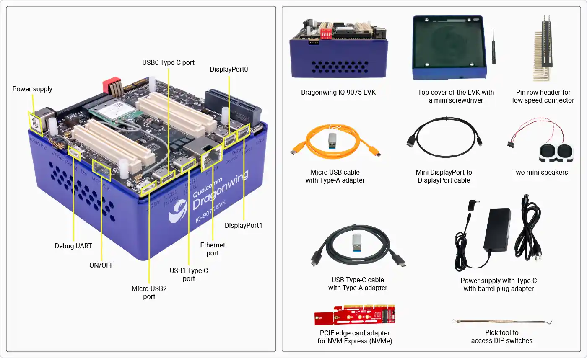
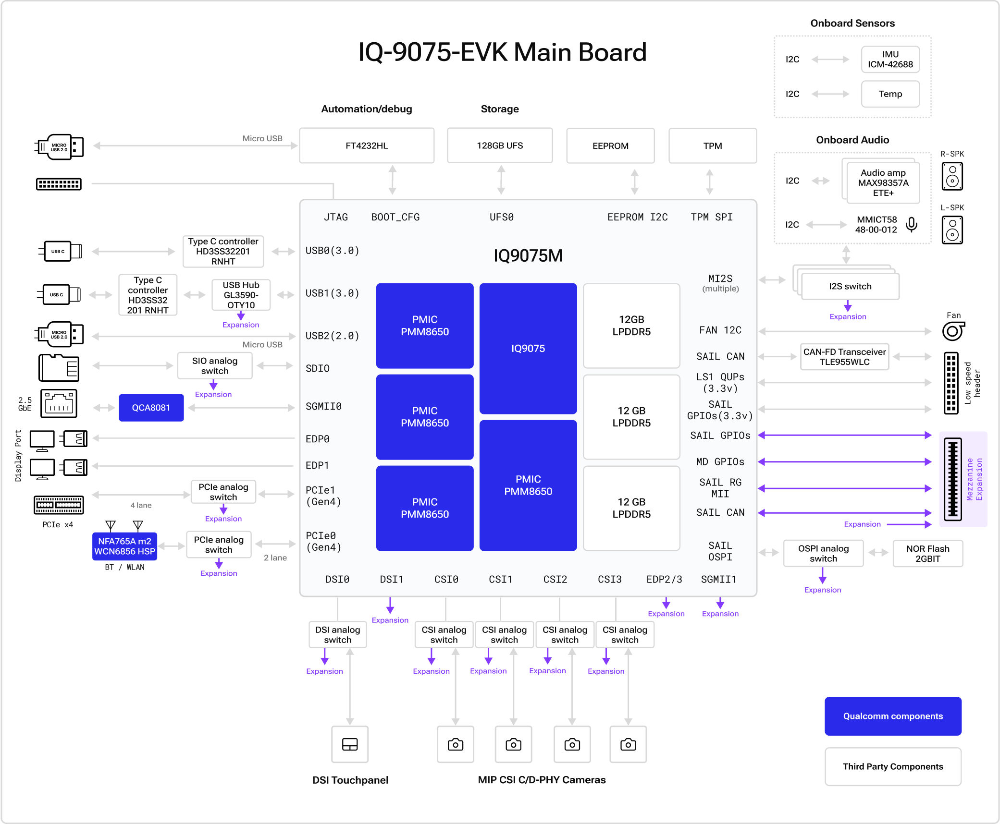
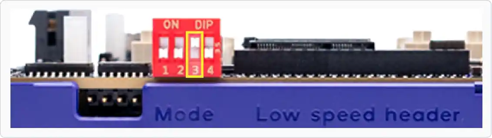

IQ-9075 EVK
Hardware Overview
Board layout, included accessories, connector map, and key hardware reference for the Qualcomm Dragonwing IQ-9075 EVK.
On This Page
01
In the Box
▶

02
Board Layout
▶
The labeled diagram below identifies key components and connectors on the IQ-9075 EVK board.

03
Block Diagram
▶
High-level block diagram of the IQ-9075 EVK showing the SoC, memory, storage, connectivity, and peripheral subsystems.

04
DIP Switches
▶
The SW2 bank of DIP switches controls the boot mode of the board. Switch SW2-3 is used to enter EDL (Emergency Download) mode for flashing.
| Switch | Position | State |
|---|---|---|
| SW2-3 | UP (ON) | EDL mode enabled — board enters QDL for flashing |
| SW2-3 | DOWN (OFF) | Normal boot from UFS storage |

05
Power Requirements
▶
| Parameter | Value |
|---|---|
| Input Voltage | 12 V DC |
| Connector | 5.5 mm / 2.5 mm barrel jack |
| Polarity | Center positive |
| Recommended Supply | Included 12 V adapter |
Always connect the 12 V power supply before connecting the USB cables. The board will not enter EDL mode reliably if powered only via USB.